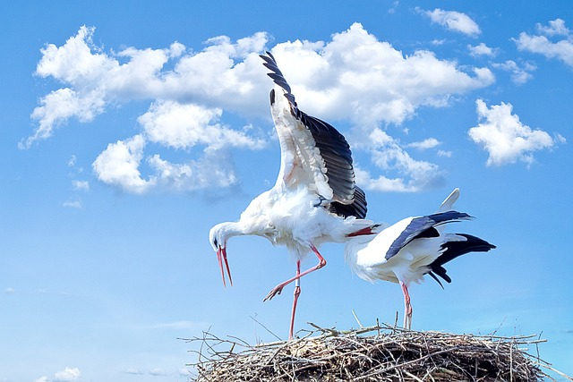
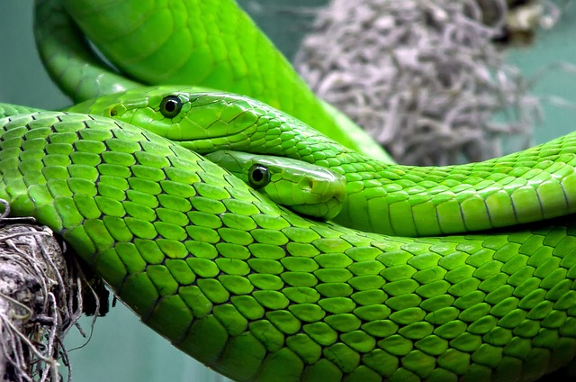

Буслы
Львы

Попугаи

Змеи
Почему нужно завести щенка
Веселые и игривые, щенки представляют собой воплощение радости и энергии. Когда щенок впервые появляется в доме, он привносит в него ощущение тепла и уюта. Щенки быстро приспосабливаются к своему новому окружению и начинают исследовать мир вокруг. Их любопытство и жизнерадостность заразительны, и щенок становится членом семьи, полным веселья и радости. Важно обеспечить щенка заботой, правильным питанием и регулярными прогулками для его здоровья и развития. Обучение командам и социализация с другими животными помогут формировать у щенка положительные навыки. Щенки обычно проявляют преданность своим владельцам, и взаимная любовь растет с каждым днем. Опыт воспитания щенка приносит множество веселых и трогательных моментов, создавая непрерывный поток удовольствия. Жизнь с щенком наполняется радостью и умиротворением, а их ласковые лаемые становятся настоящим источником утешения.